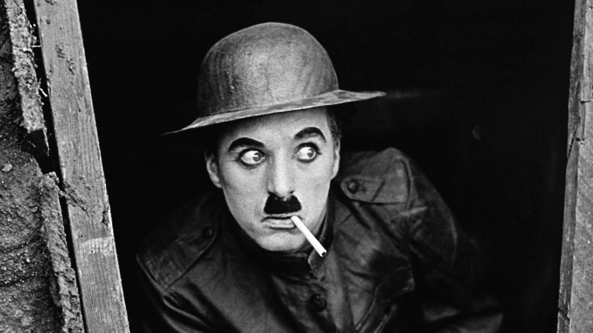

C
elebrityល្បីៗ ពុំមែនកើតមកមានទ្រព្យសម្បត្តិសម្បូរហូរហៀរគ្រប់គ្នានោះទេ។ អ្នកខ្លះ កើតមកមានស្រាប់តែម្ដង ឬទទួលកេរមត៌កពីឪពុកម្ដាយគេចែកឲ្យ ប៉ុន្តែក្នុងចំណោមនោះ មានអ្នកដែលខិតខំប្រឹងដោយខ្លួនឯង ពឹងលើសមត្ថភាពខ្លួនគេផ្ទាល់តែម្ដង។ គេបានហែលឆ្លងឧបសគ្គរាប់មិនអស់ មានតាំងពីល្វីងជូរចត់កម្សត់ទុគ៌ត និរាសព្រាត់ប្រាស ស៊ីអត់ស៊ីឃ្លាន មួយចង្កេះឆ្អេះនឹងខ្លួន រហូតដល់អ្នកខ្លះគ្មានអ្វីសម្រាប់ជ្រកកោន (homeless)។
ខាងក្រោមនេះ ជាបញ្ជីឈ្មោះបុគ្គលល្បីៗ ១0រូប ដែលបានអភិវឌ្ឍខ្លួន និងរំដោះខ្លួនពីភាពក្រីក្រតោកយ៉ាក (to free oneself from want) ឆ្ពោះទៅរកត្រើយសុភមង្គល។ បុគ្គលល្បីៗទាំងអម្បាលម៉ានខាងក្រោមនេះ អតីតកាលរបស់គេ ពុំមែនជាអ្នកដែលមានជីវភាពក្រីក្រធម្មតាទេ គឺក្ររហាមយកតែមែនទែន ពោលគឺក្ររហូតដល់ថ្នាក់ សូម្បីគេហដ្ឋាន ឬផ្ទះសម្បែងសមរម្យសម្រាប់ជ្រកខ្លួនពួនអាត្មា ក៏គ្មានដែរ ដែលគេឲ្យឈ្មោះថា អ្នកអនាថាគ្មានទីជម្រក «The Homeless»។
១-ឆាលីឆេបភ្លីន ហៅសាក់ឡូ (Charlie Chaplin): ឆាលីឆេបភ្លីន ជួបរឿងនិរាសព្រាត់ប្រាសតាំងពីកុមារភាព ពោលគឺអាយុមិនទាន់ ១០ ឆ្នាំផង ត្រូវឪពុកស្លាប់ចោល ហើយម្ដាយលោកត្រូវបានបញ្ជូនទៅមន្ទីរពេទ្យព្យាបាលជំងឺផ្លូវចិត្ត (mental hospital)។ ប្រឈមនឹងស្ថានភាពបែបនេះ ឆាលីឆេបភ្លីន ពីរនាក់បងប្រុស គ្មានអ្នកណាជួយទំនុកបម្រុងអ្វីទាំងអស់ពេលនោះ គឺដួលខ្លួនឯង ងើបខ្លួនឯង ត្រូវប្រឹងរស់ទាំងត្រដាបត្រដួសដោយខ្លួនឯង។ បច្ចុប្បន្ន ថ្វីត្បិតលោកបានទទួលមរណភាព ក៏កេរ្តិ៍ឈ្មោះរបស់លោកល្បីរន្ទឺពេញពិភពលោក និងជាតារាសំដែងដ៏ឆ្នើមម្នាក់ក្នុងពិភពភាពយន្តឥតសំឡេង (silent film)។
២-តារាចម្រៀងជេនីហ្វឺឡូប៉េ (Jennifer Lopez): ពេលនាងជេនីហ្វឺឡូប៉េ អាយុ ១៨ ឆ្នាំ នាងសម្រេចដើរផ្សងព្រេងក្នុងពិភពសិល្បៈ ព្រោះចង់ចាប់អាជីពជាអ្នករាំ ចំណែកម្ដាយរបស់នាង ចង់ឲ្យនាងរៀននៅមហាវិទ្យាល័យ។ ដូចនេះ នាងនិងម្ដាយនាង មិនចុះសម្រុងគ្នា កើតជារឿងប្រេះឆាគ្នា រហូតដល់មើលមុខគ្នាមិនចំ។ អ្នកស្រីក៏ចាកចេញពីម្ដាយក្នុងគ្រានោះទៅ ហើយទៅហាត់រាំក្នុងក្លិបរាំមួយកន្លែង ដេកតែលើសាឡុង។ បច្ចុប្បន្ន អ្នកស្រីជេនីហ្វឺឡូប៉េអាយុ ៤៥ ឆ្នាំ។ ក្នុងអាជីពរបស់អ្នកស្រី អ្នកស្រីធ្លាប់ប្រឡូកក្នុងវិស័យភាពយន្ត វិស័យចម្រៀង ផលិតករភាពយន្ត(producer) និងជាអ្នករចនាម៉ូត (designer) ហើយលោកស្រីមានទឹកប្រាក់សរុប ៣៤០ លានដុល្លារ។
៣-លោកជីមខេរី (Jim Carrey): តារាកំប្លែងរបស់ហូលីវូត (Hollywood) រូបនេះធ្លាប់រស់នៅក្រោមដំបូលតង់កៅស៊ូ ក្រោមសំយ៉ាបផ្ទះគេ។ លោកជីមខេរី ឈប់រៀនតាំងពីនៅថ្នាក់មធ្យមសិក្សាម្ល៉េះ ហើយរកផ្ទះនៅគ្មានទេ គឺនៅក្នុងសម្បករថយន្តវ៉ុលស្វាហ្គែន ដែលគេបោះចោល។ ក្រោយមក លោកទៅរស់នៅក្រោមដំបូលតង់កៅស៊ូក្រោមសំយ៉ាបផ្ទះគេ។ លោកជីមខេរី ប្រាប់ថាគឺនៅក្នុងគ្រាលំបាកនោះហើយ ដែលលោករៀនសំដែងជាតួកំប្លែងដោយខ្លួនឯង ដើម្បីរកប្រាក់មកចិញ្ចឹមជីវិត បើមិនដូច្នេះទេ មុខតែដេកស្លាប់ដោយដាច់ពោះមិនខាន។
៤-អ្នកស្រី ហលបឺរី (Halle Berry): ធ្លាប់មានប្រវត្តិរស់ក្នុងមណ្ឌលសម្រាប់ជនគ្មានទីជម្រក។ លោកស្រីកើតនៅរដ្ឋអូហៃយ៉ូ (Ohio) សហរដ្ឋអាមេរិក ហើយផ្លាស់ទៅរស់នៅទីក្រុងឈីកាហ្គោ មុននឹងក្លាយជាតារាភាពយន្ត។ កាលណោះជីវិតពិតជាពិបាកណាស់ ម៉្យាងរកប្រាក់មួយកាក់មួយសេនគ្មាន គឺដាច់លុយតែម្ដង ហើយម្ដាយរបស់អ្នកស្រី សុខចិត្តឲ្យអ្នកស្រីរៀនរស់ រៀនតស៊ូនឹងជីវិតដោយខ្លួនឯង ដោយមិនផ្ដល់ប្រាក់ឲ្យអ្នកស្រីទេ។ អ្នកស្រីហលបឺរីរៀបរាប់ប្រាប់ថា គឺក្នុងដំណាក់កាលនេះហើយ ដែលអ្នកស្រីពិបាកជាពន់ពេក មិនដឹងរកកន្លែងស្នាក់អាស្រ័យនៅឯណា ម៉្យាងគ្មានបងប្អូន សាច់ញាតិ និងមិនស្គាល់អ្នកណាសោះ អ្នកស្រីក៏ទៅសុំកន្លែងស្នាក់អាស្រ័យក្នុងមណ្ឌលសម្រាប់ជនគ្មានទីជម្រក (homeless shelter)។ រស់នៅទីនេះ អ្នកស្រីរៀនអំពីមេរៀនជីវិត អ្នកស្រីយល់ដឹងអំពីវិធីរៀនរស់ដោយខ្លួនឯង ជាជាងពឹងគេ ពោលគឺត្រូវតែជម្នះគ្រប់ឧបសគ្គ មិនថាមានអ្វីកើតឡើងទេ។ អ្នកស្រីកាលណោះ រស់នៅក្នុងជម្រកដែលមានបរិស្ថានមិនសមប្រកប ពោលគឺក្លិនស្អុយគគ្រុក គឺពេលនោះហើយដែលអ្នកស្រីរៀនសម្រេចចិត្ត (decision making) ដួលខ្លួនឯងងើបខ្លួនឯង គ្មានអ្នកណាឲ្យស៊ីទេ គឺត្រូវរៀនម្ចាស់ការលើខ្លួនឯង (self-control)។
៥-អ្នកចិត្តវិទ្យាដ៏ល្បីរបស់អាមេរិក លោកហ្វ៊ីលម៉ាក់ក្រ (Phil McGraw): កាលពីអាយុ១២ឆ្នាំ លោកជាកុមារអនាថា រកទីកន្លែងជ្រកកោនគ្មាន យកសម្បករថយន្តធ្វើជាជម្រក។ លុះធំដឹងក្ដី លោកខំប្រឹងរៀនរហូតដល់ចប់ថ្នាក់បណ្ឌិត។ លោកជាអ្នកចិត្តវិទ្យាដ៏ចំណានម្នាក់ រហូតដល់អ្នកស្រីអូផ្រាវីនហ្វ្រ៊ី (Oprah Winfrey) អញ្ជើញលោកធ្វើជាវាគ្មិនក្នុងកម្មវិធីទូរទស្សន៍ ហើយបច្ចុប្បន្នលោកជាអ្នកផ្ដល់ប្រឹក្សាផ្លូវចិត្តប្រចាំកម្មវិធីទូរទស្សន៍។ ក្រៅពីនោះ លោកក៏មានអាជីពមួយទៀត ជាអ្នកនិពន្ធសៀវភៅ។
ព័ត៌មានបន្ទាប់៖ កង់បីខ្លាចប៉ូលិសពិន័យ បកក្រោយបញ្ច្រាសប៉ះឡានអ្នកនិពន្ធងួន សុបិន